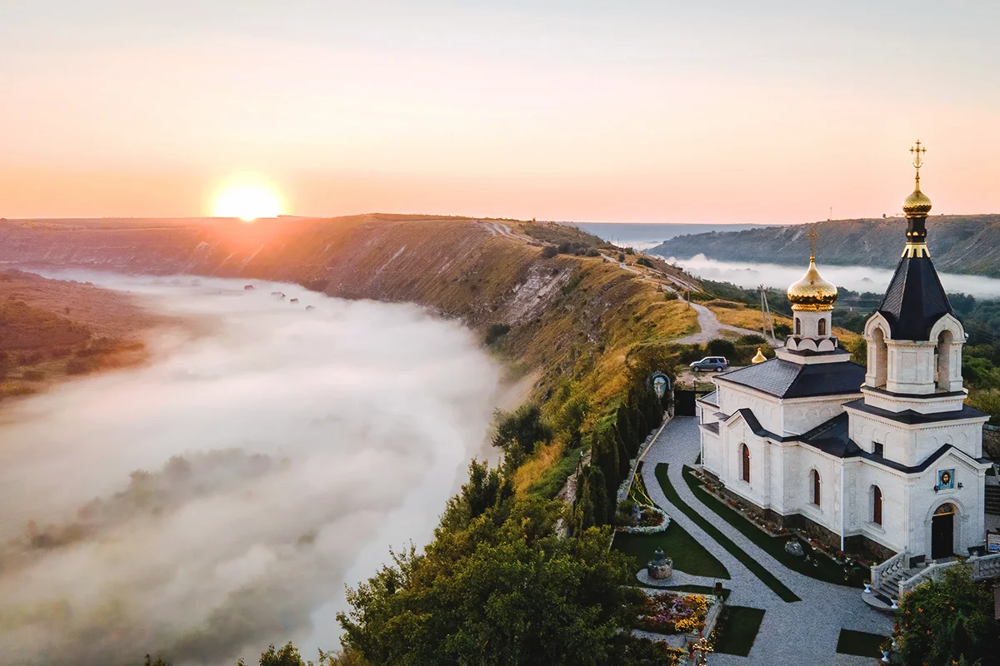
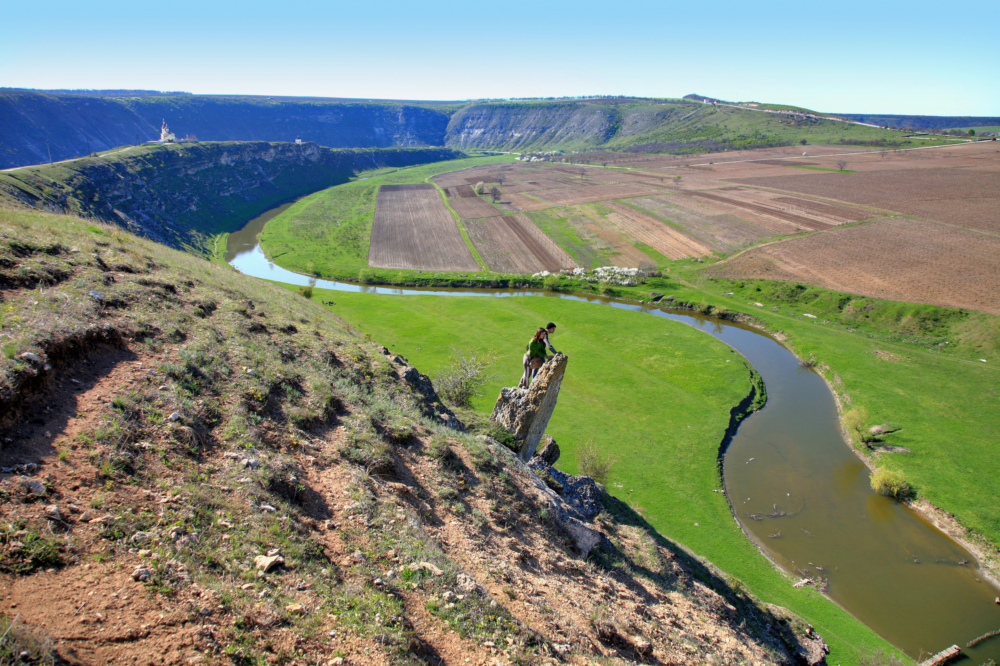
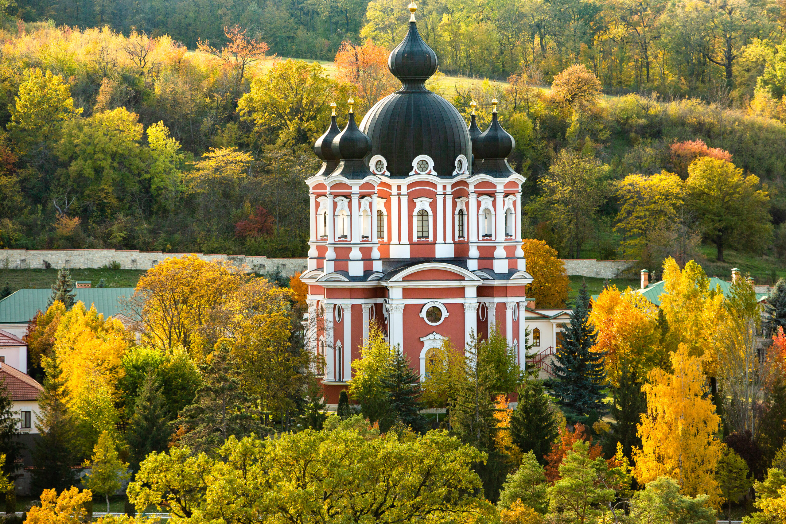
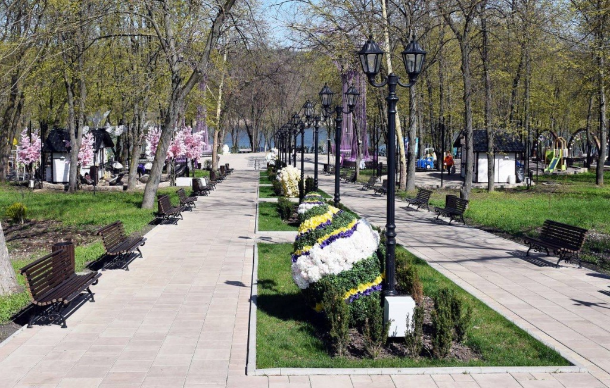
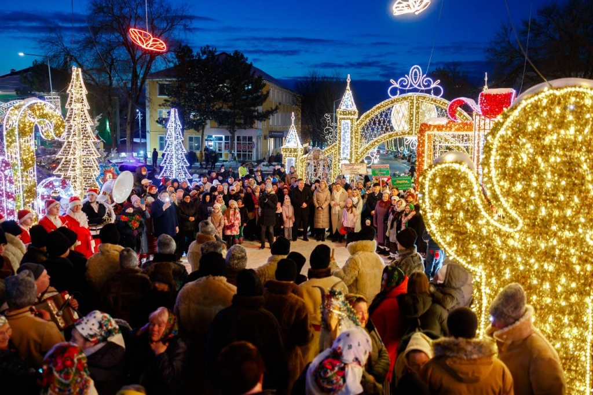
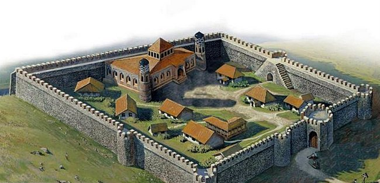
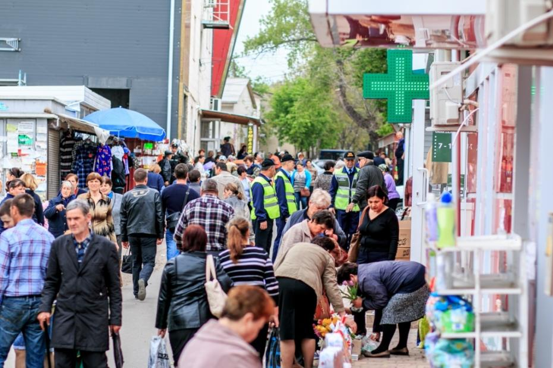
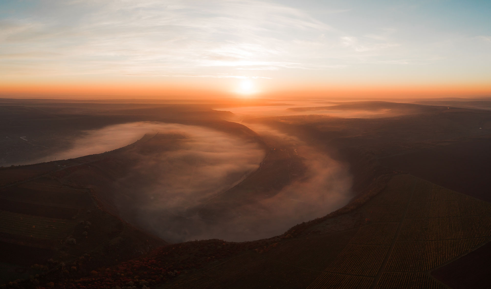
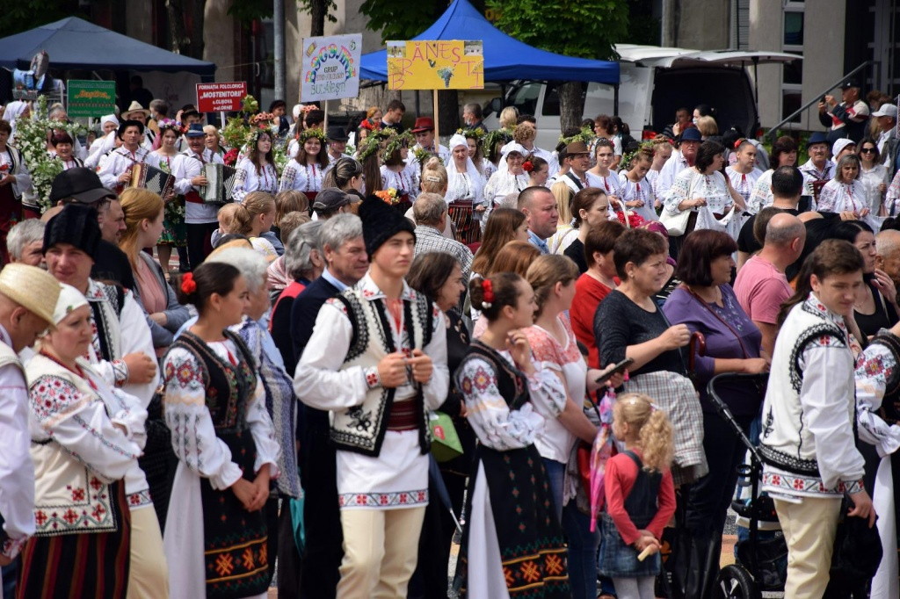
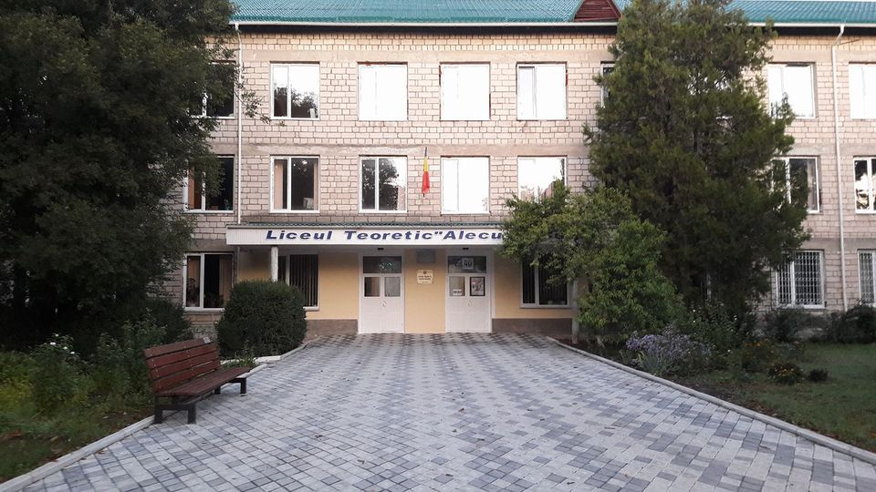

O colecție vizuală a frumuseții și istoriei Orheiului

Complexul rupestru medieval

Priveliște de pe stânci

Arhitectură neoclasică

Dealuri înflorite

Tradiții moldovenești

Ruinele istorice

Viața cotidiană

Pe malul Răutului

Sunete tradiționale

Instituția Publică Liceul Teoretic ”Alecu Russo„ Orhei
Cele mai bune ore pentru fotografii sunt dimineața devreme (06:00–09:00) și seara (17:00–20:00), când lumina naturală creează efecte spectaculoase pe stâncile Răutului.
Platoul de deasupra mănăstirii rupestre, podul de la Butuceni, malul drept al Răutului la apus — toate oferă cadre fotografice excepționale.
Descarcă harta interactivă a punctelor de belvedere și a locurilor emblematice din zona Orheiului Vechi de pe site-ul oficial al rezervației.
Descriere